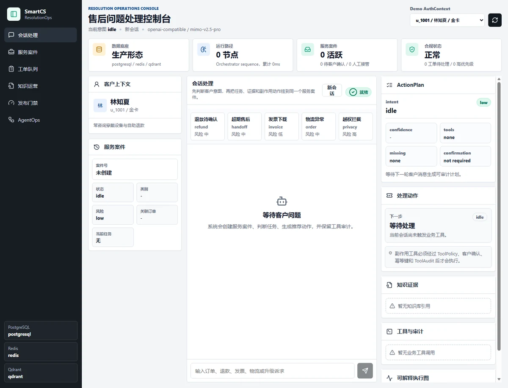

参与淘宝主搜服务端开发，将 AI 辅助研发接入需求交付流程。
- 搜索服务端用 Java 实现搜索策略与多渠道接入，将渠道规则和展示策略配置化，支持复用、实验切换与兼容回退。
- 预发交付负责自动化预发交付，衔接代码评审、部署授权与版本核验，支持中断后复用已有产物并继续推进。
- 研发评测用历史需求、代码变更和验收条件搭建基准，评测需求澄清与技术方案的质量。
AI 应用开发与 Agent 工程
东南大学软件工程硕士在读。我在淘天和腾讯参与过 AI 研发流程与 Agent 平台建设，关注 Agent 如何执行任务、从中断中恢复，以及怎样验证它的行为。
AI 研发流程与 Agent 平台
参与淘宝主搜服务端开发，将 AI 辅助研发接入需求交付流程。
参与基于 TypeScript 的云端多用户 Agent 平台建设，涉及跨轮长任务、浏览器自动化、网页和演示文稿生成。
本地 Agent 工具、电商售后与代码库理解
面向本地项目研发的轻量 Agent 工作台，支持通过 Web 或 CLI 发起和跟踪任务。
运行时支持多轮工具调用，后台 Agent 通过会话复盘更新可复用的 Skills。工具执行限制敏感路径访问，高风险命令需用户确认，并支持 Docker 无网络隔离。基准用例覆盖工具调用、记忆召回和安全拦截。

电商售后客服运营控制台，把用户诉求转成可跟踪的案件办理流程。
SmartCS 通过 LangGraph 编排案件办理，由独立工具执行层校验权限。写入操作挂起等待确认，恢复时通过幂等控制避免重复办理。CI 回归用例覆盖知识引用、权限拦截与人工转接。
RepoWiki 将公开 GitHub 仓库整理成可浏览的代码文档。
RepoMind 从源码中提取类和函数等符号，构建仓库知识图谱。Wiki 的架构与模块页面附有源码引用，问答结合 Wiki、图谱和代码片段检索，方便读者回到具体实现核对。
软件工程 · 硕士
— （预计）
软件工程 · 本科 · GPA 4.0 / 5.0 · 专业排名 1 / 80
—
欢迎交流 AI 应用开发与 Agent 工程。